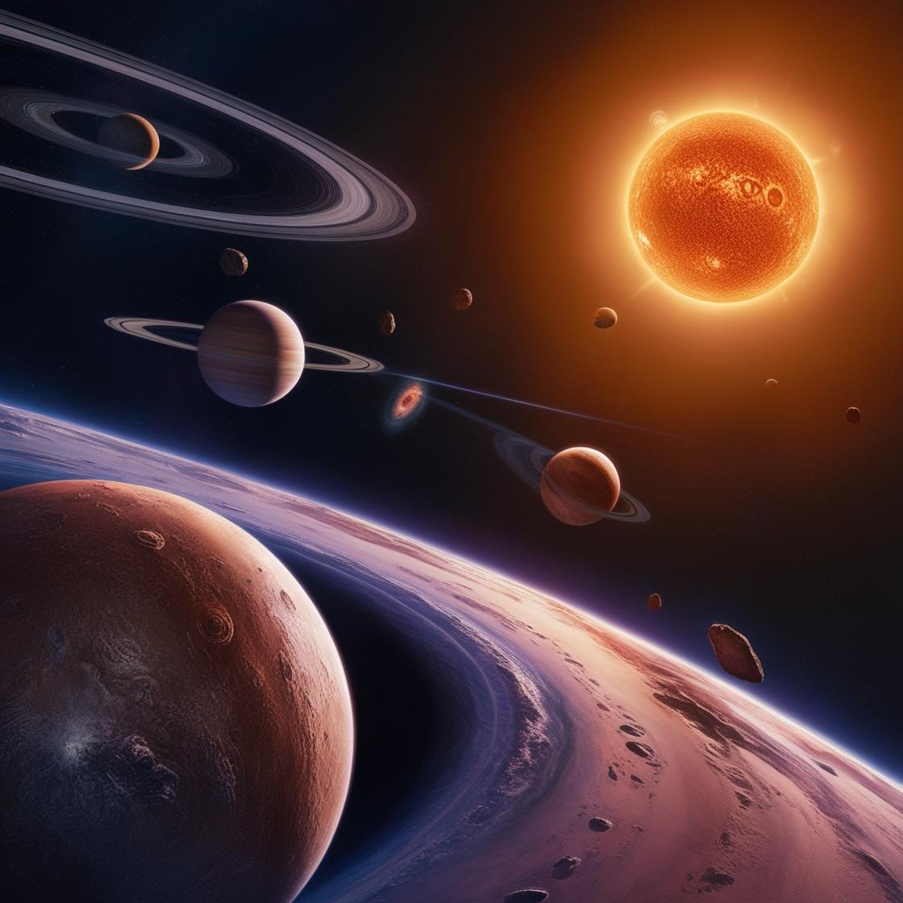

Act 2.3 - Stars and Life
Part I
"PETE,
Then we should talk about galaxies!"
"Sir, we are not that fast yet! Don't forget that we have not discussed one part yet!"
We have already said that atoms were born 380,000 years after the birth of the universe. And then another big thing happened in the universe: the birth of stars.
So when did this happen?
This stage occurred between 380,000 and 300 million years after the birth of the universe.
When talking about our life, it is nothing more than the four stages of birth, aging, illness and death. In fact, stars are similar, but there is one less stage:
Star birth ––> Star evolution ––> Star late life
Then let us focus on the life of stars.
1. The birth of stars
When talking about stars, we must review the knowledge of atoms. We mentioned earlier that the birth and evolution of particles such as atoms need to be combined or use another word "grouping". So, what does the birth of stars rely on?
–––Also grouping!
However, its clustering is different from that of atoms. The role of clustering has changed, and the reason for clustering has also changed. Compared with atoms, the role of star clustering has changed from elementary particles to atomic nuclei; while atoms actually cluster because of low temperature, here atomic nuclei do cluster because of high temperature, "accidentally".
We have mentioned earlier that as time goes by, the space of the universe is constantly expanding and the temperature is constantly decreasing. But even if the overall temperature of the universe drops, the temperature in local areas has become hot. What's going on?
380,000 years after the birth of the universe, hydrogen and helium atoms are the "protagonists" in the universe at this time. They are almost evenly distributed in the universe in the form of nebulae. In some places, however, atoms are not evenly distributed, which leads to more atoms in some places and fewer atoms in other places. Therefore, where there are more atoms, gravity becomes stronger*. More and more atoms will be attracted to gather together.
We have a saying that "where there are many people, there is a lot of fun", so where there are many atoms, it is naturally "busy" (high temperature). And where atoms are gathered, the temperature will continue to rise. When the temperature reaches a certain level, the electrons can't stand the high temperature and will instantly become unstable (as we mentioned earlier, electrons like to stay in stable places). In addition, the relationship between electrons and the nucleus is fragile, so the electrons will "break free" from the bondage of the nucleus, and the nucleus can't stop them.
The nucleus has no electrons, and the electrons have no nucleus. This state of parting ways and flying alone is called the plasma state.
Although the nucleus and the electrons no longer hold together in this state, gravity still exists, and it will continue to squeeze them, causing the nucleus to hold together, which not only makes the nucleus hold tighter and tighter, but also the nucleus will explode due to the huge pressure, and this process will release huge energy. ·At the same time, every 4 hydrogen nuclei will be forced to "gather" and become a helium nucleus.
For atomic nuclei, the process of agglomerating from several lighter atomic nuclei into heavier atomic nuclei is called a nuclear fusion reaction.
About 200 million years after the birth of the universe, the nebula collapsed into a protostar under the action of gravity. The protostar* continued to collapse until the nuclear fusion reaction in the center was ignited, entering the main sequence star* stages–––the young and middle-aged period of the star.
For the young and middle-aged period of stars, its main feature is a steady stream of hydrogen nuclei, which gather together to become helium nuclei.
By the way, three related knowledge points are mentioned:
- There are several ways to form helium nuclei, one of which is the pairing of protons and neutrons during the birth of the universe, and the other is the fusion of hydrogen nuclei in stars.
- The principle of the hydrogen bomb is also a nuclear fusion reaction, so the explosion is powerful.
- The sun continues to give us light and heat because it has a hydrogen nuclear fusion reactionin its body.
So here is a brief summary of the birth process of stars:
nebula material gathers ––> nuclear reaction starts ––> star is born ––> star enters young and middle-aged period
2. Evolution of Stars
After the birth of a star, the hydrogen nuclei inside it will continue to fuse and eventually become helium nuclei. As for heat resistance, helium nuclei are more heat-resistant than hydrogen nuclei. If you want the helium nuclei to clump together, the star must be further squeezed and heated.
According to the law of universal gravitation, gravity increases as the mass increases. If you want to increase it further, it has a great relationship with the mass of the star. If the gravity generated by the star can be squeezed to a large enough value, it can raise the temperature of the center of the star to 100 million degrees Celsius, and the helium nuclei will clump together to form beryllium nuclei or carbon nuclei, which will start a new round of nuclear reactions.
To sum up, the process of stellar evolution, it is actually the process of atomic nuclei constantly clumping together and creating many elements at the same time.
3. The late years of stars
For stars with smaller mass, the hydrogen atoms are used up and the nuclear reaction will stop at the same time.
Scientists have also made relevant predictions for the star we are most familiar with, the sun. They believe that the mass of the sun is not large enough and the gravity is not strong enough to produce carbon nuclear fusion reactions. Its energy is only enough for helium nuclear fusion reactions. After hydrogen fusion ends and before helium fusion occurs, the outer layer of the sun will expand and its diameter will increase to about 200 times its original size. At the same time, Mercury, Venus and even the Earth will be swallowed by the sun in its atmosphere.
Finally, the sun's atmosphere will dissipate, leaving a core in the middle, also known as a white dwarf*.
For some stars with higher mass, gravity will be greater, and it can continue to squeeze and heat up, allowing the nuclear fusion reaction to continue.
For stars with large masses, the temperature is highest in the center and gradually decreases in the periphery. Internal nuclear reactions usually proceed in layers, so heavier nuclei fuse inside, and lighter nuclei fuse outside. By the way, in the universe, most of the elements before iron in the periodic table are produced by stellar nuclear fusion.
Among all elements, the nucleus of iron is the strongest, and it takes huge energy for the nucleus of iron to continue to hold together.
"So how can it continue to hold together?"
"It should be a star with a large enough mass that it continues to hold together!"
"Sir, what you said makes some sense, but it is not completely correct. Let me continue to explain it!"
For some stars with larger mass, we have to use Newton's law again: the larger the mass, the greater the gravity, and at the same time, this will cause the interior of the star to be squeezed by the change of gravity and cause the temperature to rise, so that nuclear fusion can continue.
For such stars, the temperature in the center is naturally the highest, so the temperature on the periphery is the lowest. Because nuclear reactions are carried out in layers, atomic nuclei with large mass will fuse inside, while those with small mass will fuse outside.
"PETE, I have a question."
I stroked my chin and said: "I want to ask, you just said that in the periodic table, the elements before iron are produced by nuclear fusion..."
"Most of them," PETE interrupted my question and spoke.
"Okay, then what I want to say is, how to make the iron nucleus continue to hold together?"
"That's a good question. I was just about to continue talking about it, but I didn't expect you to interrupt me, sir!"
"Okay, then I'll continue."
The iron nucleus is the strongest among all elements, so it requires huge energy to hold together. So how does it generate huge energy?
"Explosion!" I answered.
"Yes, but you must have heard of the explosion I'm talking about–––supernova explosion*!"
So how does it form and change?
Let's take a closer look with a microscope:
- Due to the effect of gravity, the electrons in the center of a massive star will be squeezed into the iron nucleus.
- Since there are protons and neutrons in the iron nucleus itself, the electrons are squeezed in and combined with the protons to form neutrons. Therefore, the center of the star is basically full of neutrons, which causes the center of the star to shrink rapidly, and the peripheral matter will shrink inward sharply at this time.
- Because the peripheral matter falls inward (i.e., toward the center) too fast, it will rebound after hitting the neutron core, causing a supernova explosion.
When a supernova explodes, the interior of the star collapses sharply and the temperature rises rapidly, which will lead to an increase in nuclear reactions and various forms of clustering. Many elements are born in this way.
With the impact of the explosion, these elements will be scattered in the universe and become the raw materials for the birth of the next generation of stars, and so on. The center of the Big Bang will leave behind the celestial body we are familiar with---neutron stars or black holes.
Neutron stars are the collapsed cores of massive supergiants. They are produced by the supernova explosion of massive stars combined with gravitational collapse, compressing the core to a density exceeding that of white dwarfs and reaching the density of atomic nuclei. Its surface temperature is usually about 600,000 Kelvin*(K). The mass of a neutron star is at least 1.1 solar masses* (M_⊙). The upper limit of its mass is called the usually kept around 2.1M_⊙, but recent statistics put the upper limit at 2.16M_⊙. When the core of a star collapses, its rotation speed increases due to the conservation of angular momentum*, and the newly formed neutron star rotates hundreds of times per second. The fastest known neutron star rotates 716 times per second or 43,000 revolutions per minute. It is estimated that there are about one billion neutron stars in the Milky Way.
A black hole is a region in spacetime whose gravity is so strong that nothing, including light and other electromagnetic waves, has enough energy to escape it. It is like a "foodie" that is never full and is not picky about food. When a massive star collapses at the end of its life cycle, a stellar mass black hole is formed. After a black hole is formed, it can grow by absorbing mass from its surrounding environment. Supermassive black holes of millions of solar masses (M_⊙) may be formed by absorbing other stars and merging with other black holes. Therefore, many scientists believe that there are supermassive black holes at the center of most galaxies. For stellar black holes (that is, black holes formed by the gravitational collapse of stars), this temperature is about one billionth of a Kelvin, so it is basically impossible to observe directly.
After talking about the later years of stars, let's briefly review the life of stars again.

These are the three possible destinations of stars.
"What about after iron? How are they formed?"
"Okay, sir, I have already briefly explained this question. Since you have questions, I will answer them in detail!"
Some of the elements after iron are produced by supernova explosions, and some are produced by other methods, such as neutron star mergers, but the method is still grouping.
We know that iron is the endpoint of nuclear fusion in most stars. Stars with a larger mass will become neutron stars during collapse, and because the internal pressure of neutron stars is very high, even electrons will be compressed into the nucleus, so the nuclei of neutron stars are tightly together, and the entire neutron star is like a huge nucleus. Therefore, neutron stars are separated from nuclear fusion reactions (that is, there is no need to use nuclear fusion reactions to merge atoms), but they merge atoms directly through gravity.
If a neutron star "encounters" another neutron star, they will merge under the action of gravity. Although neutron stars merge atoms, they will not directly produce heavier elements. It is not until the neutron star explodes in a supernova that heavier elements after iron are produced, such as gold and silver. And because this kind of "encounter" is very rare, this is why gold and silver are so expensive. After all, "scarcity makes things valuable."
Annotations:
Nebulae are huge clouds of dust and gas in space. Some nebulae (more than one nebula) come from the gas and dust thrown out when dying stars (such as supernovas) explode. Other nebulae are areas where new stars begin to form.
"Gravity becomes stronger": According to the law of universal gravitation of Isaac Newton, a famous British physicist, the greater the mass of an object, the greater the gravitational force; the closer the distance between objects, the greater the gravitational force.
Protostars are celestial bodies formed by contraction in the galactic medium, which is the early stage of star formation.
The main sequence star refers to a star in the longest/most stable phase of its life
White dwarf: a very dense small star, usually the size of a planet. White dwarfs are formed when low-mass stars exhaust all their central nuclear fuel and lose the outer layers of a planetary nebula.
Supernova explosion: this is a powerful and bright explosion of a star. It occurs in the final stage of the evolution of a massive star, or when a white dwarf is triggered to runaway nuclear fusion. Shockingly, the peak luminosity of a supernova can be comparable to the luminosity of an entire galaxy, and then disappear within a few weeks or months. For example, there are hundreds of billions of stars in the Milky Way, and the brightness of a supernova explosion is about the same as the brightness of the entire Milky Way with hundreds of billions of stars. By the way, in fact, for some low-mass stars, there are also supernova explosions, but we won't go into details here.
Kelvin is a unit of measurement for temperature. It is one of the seven basic units of the International System of Units (SI). Its symbol is K, and its zero point is absolute zero (i.e. −273.15℃). The surface temperature of a neutron star is about 599727℃.
Solar mass is a unit of mass used in astronomy to represent the mass of large celestial bodies such as stars, star clusters, or galaxies. It is defined as the mass of the sun, which is about 2×10^30 kilograms. 1 solar mass is expressed as 1M_⊙=(1.98855±0.00025)×10^30kg. The mass of the sun is 333,000 times that of the Earth.
Conservation of angular momentum :in physics, angular momentum is the rotational analog of linear momentum (i.e., momentum, the product of an object's mass and velocity). Its importance to us is self-evident because it is a conserved quantity (the measurable properties of an isolated physical system do not change over time, and here the conservation of angular momentum is based on the fact that the total angular momentum of a closed system remains constant). Angular momentum has both direction and magnitude, and both are conserved. The useful properties of bicycles and motorcycles, frisbees, gyroscopes, etc. are all due to the conservation of angular momentum.